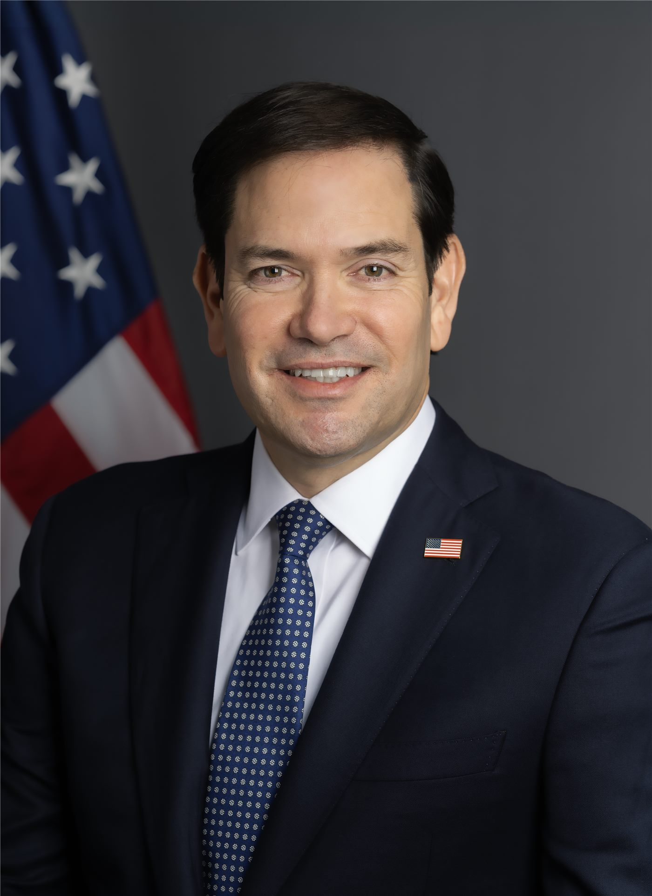

루비오 「대만 무기 판매, 미국 자체 수요와 생산능력 따져야」… 대만 「평가 과정 지켜볼 것」
마코 루비오 미 국무장관이 미·중 정상회담 직전 대만 무기 판매는 미국의 군사 수요와 방산 생산능력을 함께 고려해야 한다고 말했다. 대만을 겨냥한 것이 아니라는 설명이지만, 140억 달러 규모 판매안의 향방에 관심이 쏠린다.
여년재 기자 · 2026.09.25
橋대만

마코 루비오 미국 국무장관은 23일 유엔총회 계기 기자들과 만나, 대만에 대한 무기 판매는 어느 정도 미국 자신의 군사 수요와 국방 산업 기반의 생산 능력을 먼저 따져야 하는 문제라고 말했다.
광고 문의 · 300×250루비오 장관은 사람들이 무기 판매를 대만이라는 특정 지역에만 초점을 맞춰 보지만, 실제로는 미국의 산업 역량과 군수 기반의 균형 문제가 크게 걸려 있다고 설명했다.
「팔면 우리에겐 없다」
그는 미국이 어떤 무기를 팔면 그만큼 미국이 보유하지 못하게 된다며, 나중에 다시 확보할 수는 있겠지만 당장은 없게 된다고 말했다. 대만이든 다른 나라든 판매 여부는 세계 여러 곳의 군사 수요와 감당 가능성을 함께 저울질해 결정한다는 것이다.
루비오 장관은 지난해 12월 미국이 역대 최대 규모의 대만 무기 판매를 마무리했다는 점도 상기시켰다. 무기 판매안은 현재 「평가 절차가 진행 중」이라고 밝혔다.
엇갈린 해석
대만 일부 매체는 약 140억 달러 규모로 거론돼 온 판매안이 미·중 정상회담의 흥정 카드가 된 것 아니냐는 의구심을 제기했다. 반면 앞서 미 당국자는 판매가 취소되지 않았다는 입장을 밝힌 바 있다.
미국 의회 일각에서는 트럼프 대통령에게 대만 무기 판매를 유지하라고 촉구하는 목소리가 나왔다. 대만 정부는 미국 측 평가 과정을 주시하며 소통을 이어 가겠다는 입장이다.
출처·참고 (사실 확인용 — 본문은 직접 재작성)
· 聯合報
· 自由時報
· 聯合報
· 自由時報